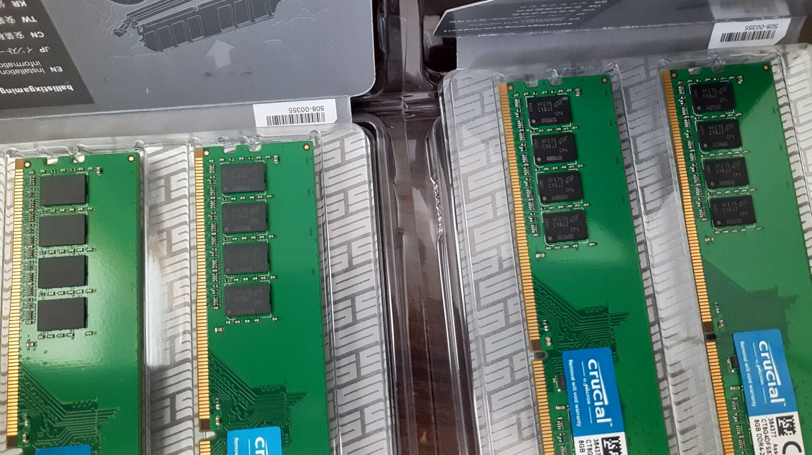
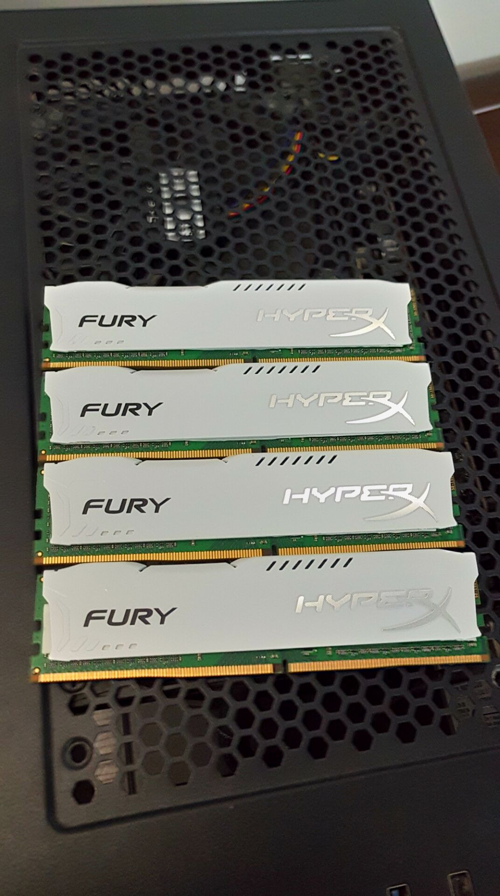
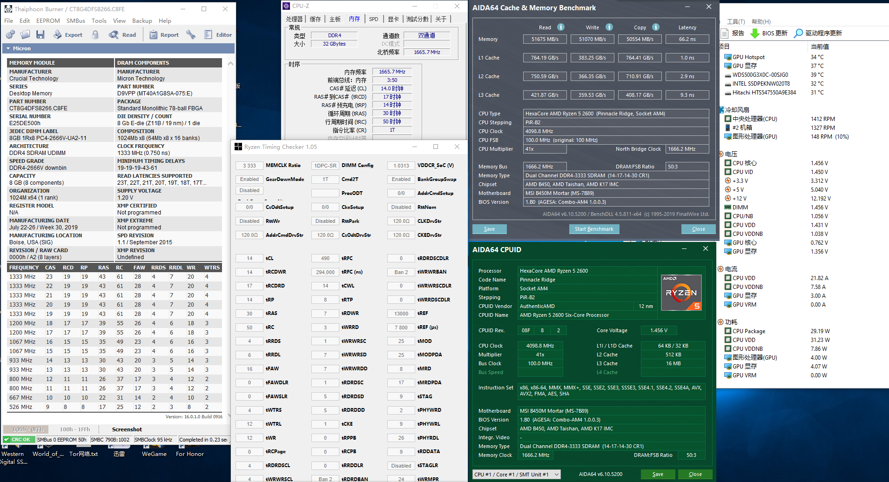

镁光 C9BJZ在Zen+/B450迫击炮平台下4DIMM超频的尝试
2019年之末，镁光E-die新颗粒C9BJZ因其高频的特性，迅速在玩家之间流行起来，并替代了之前E-die旧型号D9VPP。16G内存对我来说已经不够用，所以一次性花了1000块买了四根回来。

我购买的C9BJZ的具体批次是9FE75，和当时评测火起来的第一批9EE75体质应该是差不多的。
将主板bios更新到最新，以解锁颗粒特性。再装上淘宝买的假骇客神条铁皮马甲，这样小绿条看起来也不是那么廉价了。
开机点亮，从最新版台风截图可以看到软件将其识别为E-die旧款D9VPP，C9BJZ依旧是识别失败的，如果买了带马甲的铂胜，就只能靠热吹风拆马甲大法来确认颗粒了..
AM4最快捷的超频方式是先抄Ryzen DRAM Calculator软件的参数，选择相应的参数填进去，Safe档和Fast档均能通过RunMemtestPro烧机。镁光Edie的颗粒特性是耐高压、易高频、对IMC压力低。具体到小参，优点为tCL、tTRC值只要给电压就能压低，tRP、tRAS也看得过去。缺点是tRCD特别硬。
这是1.45V 3333C14的截图。在有9cm风扇直吹的情况下，我将电压拉到1.6V，进一步压缩小参。tCL12 tRCDWR12 tRP12 tRAS21,其他参数不变，频率依旧3333(平台极限，后续甚至因为IMC不稳定，我最终将频率降到3133...)，但是写这篇文章的时候我已经不用C9BJZ，C12跑分截图也丢失了...反正在延迟大概是65.x，和特挑三星B-die还有3-5ns的差距
总的来说，C9普条225一根的价格，仅仅是特挑三星B-die一半不到的价格。对比同价位的科赋CJR成绩相差无几，在4000以下频率C9BJZ也相当能打，高频甚至能直接甩飞CJR，要什么自行车呢